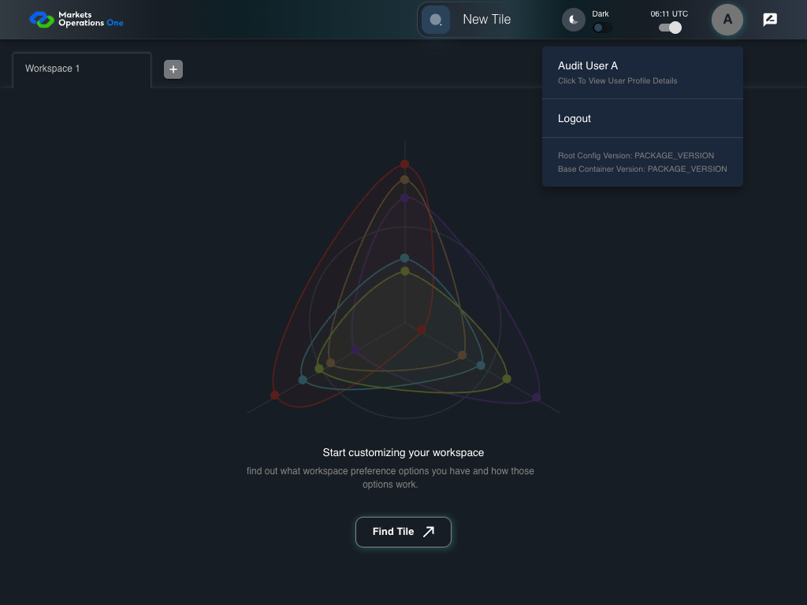

UX-026 responsive shell 1024x768
PASS · application/run-050/ux-026-responsive-shell-1024x768-9d5402154bf2-attempt-1 · ACTUAL_APPLICATION_LOCAL_SERVICES
Actual React shell. Controlled catalog, user identity, photo failures, and SystemJS tenant. Chromium only. Accessibility and layout outcomes are proposed probes; no approved conformance standard is inferred.
2026-10-22T06:11:50.342Z to 2026-10-22T06:11:52.804Z
Assertions and result · Artifact manifest · Exact run inputs and source hashes
Result SHA-256:8249d5e9949172ff54f1160ddb051911644ddee33dabe5cab94885a036fb25bdScreenshot capture: CAPTURED. Named frames: 9.
Step screenshot bindings: COMPLETE. 8/8 canonical steps have execution screenshots.
Bindings measure structural coverage only. They do not establish screenshot content quality or relevance.
Screenshot content review: NOT_REVIEWED. Recorded context: 0/9 frames. Identical image bytes: 4 repeated frames. Recorded context does not establish human visual review.
Canonical step timeline
Given USER-A has Home visible at 1024 by 768 CSS pixels
Execution: PASSED.1. step-01 Visible state after step 1: Given USER-A has Home visible at 1024 by 768 CSS pixels
2026-10-22T06:11:51.387Z · 1024×768
Step: /Users/lushevol/code/github/ratan-release-impact/workbench/tasks/ui-test-coverage-20261022/test-cases.md:13093
SHA-256:6c9ab7bc4a487401a3e1b08c04da461c79e71b79625b52853a558053cc8869f6When USER-A clicks the section labelled "New Tile" on the Home page
Execution: PASSED.2. step-02 Visible state after step 2: When USER-A clicks the section labelled "New Tile" on the Home page
2026-10-22T06:11:51.545Z · 1024×768
Step: /Users/lushevol/code/github/ratan-release-impact/workbench/tasks/ui-test-coverage-20261022/test-cases.md:13094
SHA-256:0f3c02d55c1316f811ebbf5e9f1168dc0ae549b40ba6c05032feecf8567121b5Then The section labelled "Tile Options" on the Home page is visible within the viewport or its scroll area
Execution: PASSED.
3. step-03 Visible state after step 3: Then The section labelled "Tile Options" on the Home page is visible within the viewport or its scroll area
2026-10-22T06:11:51.610Z · 1024×768
Step: /Users/lushevol/code/github/ratan-release-impact/workbench/tasks/ui-test-coverage-20261022/test-cases.md:13095
SHA-256:0f3c02d55c1316f811ebbf5e9f1168dc0ae549b40ba6c05032feecf8567121b5Image bytes match frame 2. An unchanged image can be valid for consecutive assertions. This match does not establish correct step content.
When USER-A presses "Escape" inside the section labelled "Tile Options" on the Home page
Execution: PASSED.4. step-04 Visible state after step 4: When USER-A presses "Escape" inside the section labelled "Tile Options" on the Home page
2026-10-22T06:11:51.698Z · 1024×768
Step: /Users/lushevol/code/github/ratan-release-impact/workbench/tasks/ui-test-coverage-20261022/test-cases.md:13096
SHA-256:228c7759951e19489d7ab1a1f98ac2b16e2d87d2399709e0da815e0156392618Then The section labelled "Tile Options" on the Home page is hidden
Execution: PASSED.5. step-05 Visible state after step 5: Then The section labelled "Tile Options" on the Home page is hidden
2026-10-22T06:11:51.966Z · 1024×768
Step: /Users/lushevol/code/github/ratan-release-impact/workbench/tasks/ui-test-coverage-20261022/test-cases.md:13097
SHA-256:f6ef91c4b8a4f6e839e46774573331dc9e7fed730e812f52cf50dff179a69345When USER-A clicks the icon button with test ID "${MFE_APP_PREFIX_STYLE}_avatar_IconButton" on the Home page
Execution: PASSED.
6. step-06 Visible state after step 6: When USER-A clicks the icon button with test ID "${MFE_APP_PREFIX_STYLE}_avatar_IconButton" on the Home page
2026-10-22T06:11:52.074Z · 1024×768
Step: /Users/lushevol/code/github/ratan-release-impact/workbench/tasks/ui-test-coverage-20261022/test-cases.md:13098
SHA-256:527192dbbe18702f22e4a3244324ad75200da553e74bfdf32dc6f468553e17ffThen The menu item with test ID "${MFE_APP_PREFIX_STYLE}_avatar_Profile" in the menu with identifier "menu-appbar-avatar" on the Home page is visible without overlap with the menu item labelled "Logout" in the menu with identifier "menu-appbar-avatar" on the Home page
Execution: PASSED.
7. step-07 Visible state after step 7: Then The menu item with test ID "${MFE_APP_PREFIX_STYLE}_avatar_Profile" in the menu with identifier "menu-appbar-avatar" on the Home page is visible without overlap with the menu item labelled "Logout" in the menu with identifier "menu-appbar-avatar" on the Home page
2026-10-22T06:11:52.175Z · 1024×768
Step: /Users/lushevol/code/github/ratan-release-impact/workbench/tasks/ui-test-coverage-20261022/test-cases.md:13099
SHA-256:527192dbbe18702f22e4a3244324ad75200da553e74bfdf32dc6f468553e17ffImage bytes match frame 6. An unchanged image can be valid for consecutive assertions. This match does not establish correct step content.
And The menu item labelled "Logout" in the menu with identifier "menu-appbar-avatar" on the Home page is enabled and reachable within the viewport
Execution: PASSED.
8. step-08 Visible state after step 8: And The menu item labelled "Logout" in the menu with identifier "menu-appbar-avatar" on the Home page is enabled and reachable within the viewport
2026-10-22T06:11:52.248Z · 1024×768
Step: /Users/lushevol/code/github/ratan-release-impact/workbench/tasks/ui-test-coverage-20261022/test-cases.md:13100
SHA-256:527192dbbe18702f22e4a3244324ad75200da553e74bfdf32dc6f468553e17ffImage bytes match frame 7. An unchanged image can be valid for consecutive assertions. This match does not establish correct step content.
Additional named frames

The final visible state after the named test assertions.
2026-10-22T06:11:52.367Z · 1024×768Step: Test source: /Users/lushevol/code/github/ratan-release-impact/workbench/e2e/audit-specs/ux-shell.spec.ts:113
SHA-256:
527192dbbe18702f22e4a3244324ad75200da553e74bfdf32dc6f468553e17ffImage bytes match frame 8. An unchanged image can be valid for consecutive assertions. This match does not establish correct step content.
Screenshots establish visible state only. Assertions and traces support functional claims.